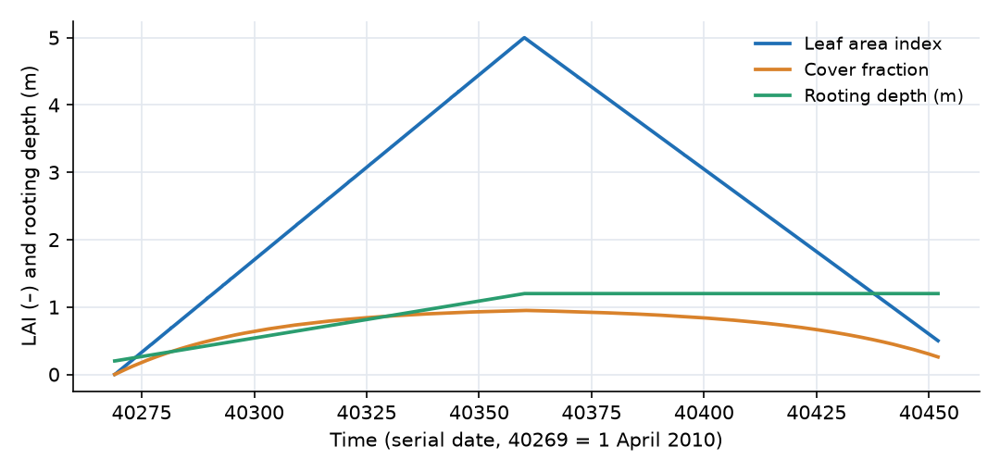
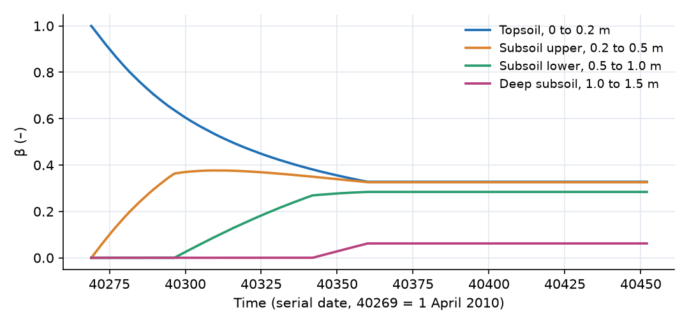
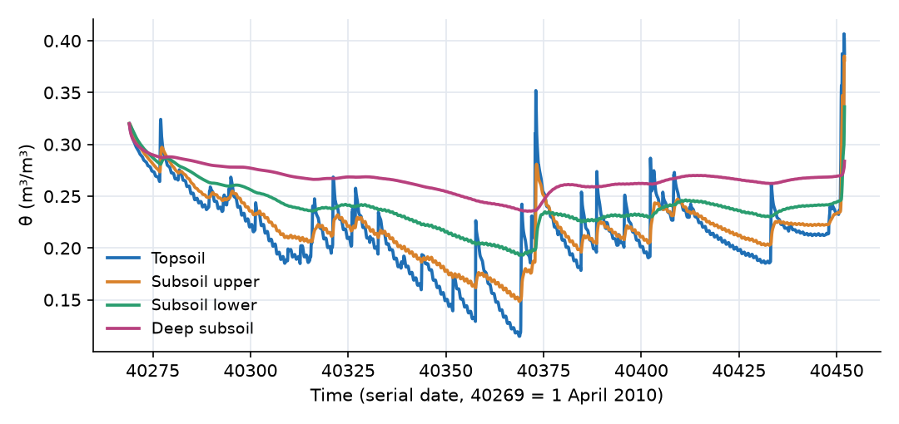
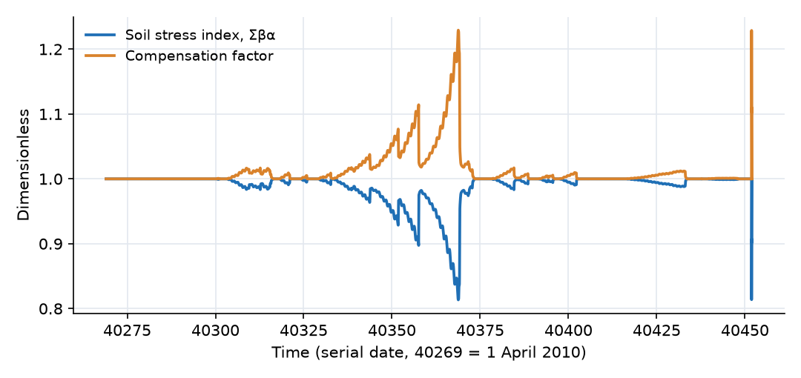
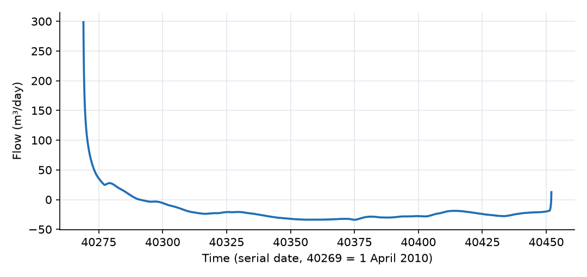

What this model represents
A field crop's water use changes through the season. At planting the canopy is bare and the roots are shallow. By midsummer the canopy covers the ground and the roots reach a metre or more, so the crop transpires at close to its full potential rate and draws water from deep in the profile. This model follows one hectare of corn from 1 April to 1 October 2010 on a 1.5 m soil profile divided into four layers, with measured half-hourly weather from Baltimore/Washington International Airport, Maryland, and a crop calendar for leaf area and rooting depth.
It uses the demand-driven plant formulation in OpenHydroQual (Model 2 in the technical guide linked above). A Crop_Penman block computes the potential transpiration of the whole crop. One Root_uptake_link per soil layer carries a share of that demand, derived from where the roots are; nothing about the root distribution is typed in. When a layer dries, the others take over its share. This is what you need when roots grow during the season or when the profile dries unevenly. For a fixed, user-specified root distribution, see the Rooted Soil Profile Transpiration example.
The download also contains crop_root_uptake_compensation.ohq, which runs two identical profiles through a long drought, one crop with compensation and one without, to show what compensation does.
How it works
The expressions below are from plants.json, and the formulation follows the technical guide.
Atmospheric demand. The crop computes the reference evapotranspiration ET₀ (m/day) from the four weather series with the same Penman combination equation as the Transpiration_Penman (Soil) source, using a radiation scale factor of 0.5 and a wind scale factor of 0.28 (ET₀ = −(Δ·E_r + γ·E_a)/(Δ + γ), with the slope Δ = 4098·e_s/(237.3 + T)², the radiation term E_r and the aerodynamic term E_a; all terms are written out in the Rooted Soil Profile Transpiration example). The potential transpiration of the crop is
T_p = ET₀ · K_cb · f_c · A, f_c = 1 − exp(−k · LAI)
with K_cb = 1.15 (the FAO-56 basal coefficient for mid-season maize), k = 0.6 and A = 10 000 m². The cover fraction f_c is Beer's law, so the transpiring fraction of the field follows the canopy. Leaf area index and rooting depth are each a constant plus a time series:
LAI = LAI_constant + LAI_series, Z_r = root_depth_constant + root_depth_series
Root distribution. Root density decreases exponentially with depth, ρ(z) ∝ exp(−λz/Z_r), with λ = 2. Each uptake link finds the depth to the top and bottom of its layer from the layer's bottom_elevation and depth and the crop's surface_elevation (10 m), clipped at the root tip:
z_top = min((E_s − z_b − d)⁺, Z_r), z_bot = min((E_s − z_b)⁺, Z_r)
and its root fraction is
β = [exp(−λ·z_top/Z_r) − exp(−λ·z_bot/Z_r)] / (1 − exp(−λ))
Over contiguous layers that span the root zone the β values sum to one. A layer below the root tip gets β = 0.
Water stress. Each link reduces its share with the Feddes function of its layer's pressure head h:
α = max(0, min( min((h − h₄)/(h₃ − h₄), 1), (h − h₁)/(h₂ − h₁) ))
with h₁ = −0.1 m (anoxia), h₂ = −0.25 m and h₃ = −5 m (the optimal range) and h₄ = −160 m (wilting). Uptake is unrestricted between −0.25 and −5 m, falls to zero at the wilting point, and also falls to zero as the layer approaches saturation.
Compensation. The flow in each uptake link is
q_i = T_p · β_i · α_i · C, C = 1 / (c · max(Σβα, 0.001) + (1 − c))
with c the compensation switch (1 here). The crop obtains Σβα from averages over its links, Σβα = mean(βα)/mean(β), which works because the β values sum to one. With c = 1 the total uptake equals T_p whenever any rooted layer can supply water. Σβα is reported as soil_stress.
The crop block's storage. Uptake fills a small storage in the crop, and transpiration empties it at the rate S/K_plant with K_plant = 0.01 day. The storage only smooths the exchange between supply and demand; it does not represent plant water content.
Soil. The four layers are Soil blocks (unsaturated_soil.json) with van Genuchten parameters α = 1.5 1/m, n = 1.4, θᵣ = 0.06, θₛ = 0.42 and K_sat = 0.8 m/day, starting at θ = 0.32. They are connected by Darcy-Buckingham links, and the bottom layer exchanges water with the fixed water table. The 1D Infiltration and Soil Boundary Conditions example sets out these soil equations in full.
What to look for in the results
- Canopy and roots. LAI rises from 0 at planting to 5.0 on 1 July and falls to 0.5 at harvest, and the rooting depth grows from 0.2 m to 1.2 m by 1 July. On 17 May (LAI 2.6, Z_r = 0.71 m) the cover fraction is 0.79. On 16 July (LAI 4.2, Z_r = 1.2 m) it is 0.92, and the instantaneous mid-afternoon T_p reaches 15.5 mm/day.
- Root fractions that move downward. The topsoil holds all of the roots at planting, 0.50 of them on 17 May and 0.33 from July onward, when the four fractions are 0.33, 0.33, 0.28 and 0.06. Their sum stays at 1.000000 throughout, while the roots grow.
- Seasonal water balance. Over the six months the crop transpires 791 mm, which is the full potential amount: compensation keeps actual uptake equal to T_p. Daily T_p is about 4 mm at the start of May, 5.6 mm on 1 June, 7.4 mm on 1 July, 4.6 mm on 1 August and 4.1 mm on 1 September. The rain supplies 497 mm. The rest comes from 314 mm of capillary rise from the water table, while profile storage ends 22 mm higher than it started. By layer, uptake is 311 mm from the topsoil, 265 mm from the upper subsoil, 185 mm from the lower subsoil and 29 mm from the deep subsoil.
- Stress is mild and is compensated. The soil stress index falls below one in dry spells, to a minimum of 0.81 on 9 July, when the topsoil reaches θ = 0.11. At the same time the compensation factor reaches 1.23, shifting uptake towards the wetter deep layers. A last, short dip on 30 September comes from the opposite end of the Feddes function: 135 mm of rain in the final week nearly saturates the topsoil, and uptake from it is reduced for lack of oxygen.
- Capillary rise. The wet initial profile drains for about three weeks, then the water table starts to supply water (from 22 April). Through the summer about 3 mm/day rises into the profile.
- Compensation on and off. In
crop_root_uptake_compensation.ohq, at the end of the 135-day drought: the compensated crop is still transpiring at its full 21.9 m³/day, but its soil stress index is 0.062, its compensation factor is 16, and 99.5% of its uptake comes from the deepest layer. Its profile is drawn down to θ = 0.100, 0.100 and 0.112. The uncompensated crop transpires only 12.4 m³/day (57% of potential) with θ = 0.106, 0.139 and 0.182 still in its profile, because most of its roots sit in layers that have dried. Over the run the compensated crop transpires 664 mm and the uncompensated one 614 mm.
Assumptions and limitations
- Transpiration only. Soil evaporation is not modelled. K_cb is a basal coefficient, so an evaporation source can be added to the top layer without double counting.
- Only uptake links may be attached to the crop block. The compensation factor is built from averages over all of the crop's links, and any other link type would corrupt it.
- Compensation is unlimited. As the profile dries, C grows without bound and concentrates the entire demand on whichever layer is still wet (a factor of 16 in the drought comparison). Some models cap it. In practice the levers are a higher h₄ or switching compensation off.
- Penman ET₀. The radiation term uses incoming shortwave radiation scaled by 0.5, not a computed net radiation, and there is no soil heat flux term. The scale factor should be set from site data before the model is used quantitatively. The aerodynamic term carries roughly a quarter of the weight in summer, so the assumed wind speed units (km/h) also matter.
- The weather is a single 2010 NOAA record from Baltimore/Washington International Airport (BWI), Maryland. The wind speed units are not recorded with the data.
- The 1.5 m between the base of the profile and the water table is not represented as soil: the link to the water table spans only half the bottom layer. Together with the layer-top head reference of the soil plugin, this makes the capillary supply (about 3 mm/day from a water table 3 m deep) larger than a fully resolved profile would give.
- The four layers have unequal thicknesses (0.2, 0.3, 0.5 and 0.5 m). Because the soil plugin refers each layer's head to its top, the gravity component of the gradient between layers of unequal thickness is less than one.
Model diagram
Hover a block or link to see its name and type. Arrows show the positive flow direction.
Components
Click a component to see every property set in the model file, with units and meaning.
Blocks 7
Storage compartments: each holds water (and dissolved or particulate mass) and has a state that evolves in time.
Corn_fieldCatchmentThe 1 ha (10 000 m²) field surface at 10 m elevation. Rain lands here and infiltrates into the topsoil. It has no runoff outlet; the Manning coefficient is required by the block type but unused.
Catchment: Catchment
| Property | Value | Unit | Meaning |
|---|---|---|---|
| Manning's Roughness Coefficient | 0.15 | The Manning's roughness coefficient representing surface resistance to flow. Typical values vary by land cover type. | |
| Precipitation | Rain_2010 | m^3/day | A precipitation source object must be selected. |
| Catchment area | 10000 | m2 | Total horizontal surface area of the catchment. Used to compute initial storage and flow-related parameters. |
| Average water depth | 0 | m | The initial depth of the standing water before the simulation start time. Most of the times, this value is zero |
| Mean elevation of the catchment | 10 | m | The elevation of the centroid of the catchment based on the model datum. |
TopsoilSoil · unsaturated_soilSoil layer from 0 to 0.2 m depth.
Soil: Variably Saturated Soil Block
| Property | Value | Unit | Meaning |
|---|---|---|---|
| Saturated Hydraulic Conductivity | 0.8 | m/day | Saturated Hydraulc Conductivity |
| Van Genuchten's alpha parameter | 1.5 | 1/m | Van Genuchten's alpha parameter |
| Bottom Area of the soil block | 10000 | m2 | Bottom Area of the soil block |
| Bottom Elevation of the soil block | 9.8 | m | Bottom Elevation of the soil block |
| Depth of the soil block | 0.2 | m | Depth of the soil block |
| Van Genuchten's n parameter | 1.4 | Van Genuchten's n parameter | |
| Specific storage | 0.01 | 1/m | Specific storage |
| Initial Moisture Content | 0.32 | Initial Moisture Content; Moisture Content | |
| Residual Moisture Content | 0.06 | Residual Moisture Content | |
| Saturated Moisture Content | 0.42 | Saturated Moisture Content |
Subsoil_upperSoil · unsaturated_soilSoil layer from 0.2 to 0.5 m depth.
Soil: Variably Saturated Soil Block
| Property | Value | Unit | Meaning |
|---|---|---|---|
| Saturated Hydraulic Conductivity | 0.8 | m/day | Saturated Hydraulc Conductivity |
| Van Genuchten's alpha parameter | 1.5 | 1/m | Van Genuchten's alpha parameter |
| Bottom Area of the soil block | 10000 | m2 | Bottom Area of the soil block |
| Bottom Elevation of the soil block | 9.5 | m | Bottom Elevation of the soil block |
| Depth of the soil block | 0.3 | m | Depth of the soil block |
| Van Genuchten's n parameter | 1.4 | Van Genuchten's n parameter | |
| Specific storage | 0.01 | 1/m | Specific storage |
| Initial Moisture Content | 0.32 | Initial Moisture Content; Moisture Content | |
| Residual Moisture Content | 0.06 | Residual Moisture Content | |
| Saturated Moisture Content | 0.42 | Saturated Moisture Content |
Subsoil_lowerSoil · unsaturated_soilSoil layer from 0.5 to 1.0 m depth.
Soil: Variably Saturated Soil Block
| Property | Value | Unit | Meaning |
|---|---|---|---|
| Saturated Hydraulic Conductivity | 0.8 | m/day | Saturated Hydraulc Conductivity |
| Van Genuchten's alpha parameter | 1.5 | 1/m | Van Genuchten's alpha parameter |
| Bottom Area of the soil block | 10000 | m2 | Bottom Area of the soil block |
| Bottom Elevation of the soil block | 9 | m | Bottom Elevation of the soil block |
| Depth of the soil block | 0.5 | m | Depth of the soil block |
| Van Genuchten's n parameter | 1.4 | Van Genuchten's n parameter | |
| Specific storage | 0.01 | 1/m | Specific storage |
| Initial Moisture Content | 0.32 | Initial Moisture Content; Moisture Content | |
| Residual Moisture Content | 0.06 | Residual Moisture Content | |
| Saturated Moisture Content | 0.42 | Saturated Moisture Content |
Deep_subsoilSoil · unsaturated_soilSoil layer from 1.0 to 1.5 m depth. The roots only reach its top 0.2 m.
Soil: Variably Saturated Soil Block
| Property | Value | Unit | Meaning |
|---|---|---|---|
| Saturated Hydraulic Conductivity | 0.8 | m/day | Saturated Hydraulc Conductivity |
| Van Genuchten's alpha parameter | 1.5 | 1/m | Van Genuchten's alpha parameter |
| Bottom Area of the soil block | 10000 | m2 | Bottom Area of the soil block |
| Bottom Elevation of the soil block | 8.5 | m | Bottom Elevation of the soil block |
| Depth of the soil block | 0.5 | m | Depth of the soil block |
| Van Genuchten's n parameter | 1.4 | Van Genuchten's n parameter | |
| Specific storage | 0.01 | 1/m | Specific storage |
| Initial Moisture Content | 0.32 | Initial Moisture Content; Moisture Content | |
| Residual Moisture Content | 0.06 | Residual Moisture Content | |
| Saturated Moisture Content | 0.42 | Saturated Moisture Content |
Water_tablefixed_headA fixed water table at 7.0 m elevation, 3 m below the surface and 1.5 m below the base of the profile.
fixed_head: Fixed-head boundary
| Property | Value | Unit | Meaning |
|---|---|---|---|
| Initial Storage | 100000 | m3 | |
| Head | 7 | m |
CornCrop_Penman · plantsThe crop (Crop_Penman block). It computes the potential transpiration from Penman ET0, a basal crop coefficient of 1.15 and the canopy cover implied by the leaf area index, and spreads that demand over the soil layers through its four uptake links. Leaf area index and rooting depth follow lai_corn.csv and root_depth_corn.csv. Compensation is on.
Crop_Penman block). It computes the potential transpiration from Penman ET0, a basal crop coefficient of 1.15 and the canopy cover implied by the leaf area index, and spreads that demand over the soil layers through its four uptake links. Leaf area index and rooting depth follow lai_corn.csv and root_depth_corn.csv. Compensation is on.Crop_Penman: As Crop, but the reference evapotranspiration is computed internally from solar radiation, air temperature, relative humidity and wind speed by the Penman combination equation instead of being supplied as a time series.
| Property | Value | Unit | Meaning |
|---|---|---|---|
| Canopy pathway residence time | 0.01 | day | Time constant of the plant water pathway. It should be short compared with a day; it exists so that uptake and transpiration balance dynamically rather than instantaneously. |
| Basal crop coefficient | 1.15 | FAO-56 basal crop coefficient, covering transpiration only. Soil evaporation is not included. | |
| Constant leaf area index | 0 | ||
| Time variable leaf area index | lai_corn.csv | Added to the constant value, so leave it empty for a static canopy. Supply a crop-calendar or remote-sensing series for a seasonal canopy. | |
| Relative humidity (0-1) | humidity_2010.csv | ||
| Air temperature | temperature_2010.csv | degreeC | |
| Ground area covered by the plant | 10000 | m2 | |
| Root water compensation (1 = on, 0 = off) | 1 | With compensation on, layers that are wet make up for layers that are stressed, so total uptake stays at the potential rate as long as any rooted layer can supply. With it off, stress in one layer is simply lost. Compensation is the standard behaviour in SWAP and APEX. | |
| Psychrometric constant | 66.8 | ||
| Feddes h1, pressure head above which uptake stops (anoxia) | -0.1 | m | |
| Feddes h3, dry end of the optimal range | -5 | m | |
| Feddes h2, wet end of the optimal range | -0.25 | m | |
| Feddes h4, wilting point pressure head | -160 | m | |
| Canopy extinction coefficient | 0.6 | Beer's law coefficient setting how quickly the canopy intercepts radiation. The transpiring fraction of the surface is 1-exp(-k*LAI). | |
| Constant rooting depth | 0.2 | m | |
| Time variable rooting depth | root_depth_corn.csv | m | Added to the constant value, so leave it empty for a static root system. Supply a series to let roots deepen through a season. |
| Root density shape parameter | 2 | Root density falls off as exp(-lambda*z/root_depth). Small values approach a uniform distribution, larger values concentrate roots near the surface. Around 2 is typical. | |
| Solar radiation | solar_radiation_2010.csv | W/m^2 | |
| Solar scale factor | 0.5 | ||
| Elevation of the ground surface | 10 | m | Datum for root depth. Each uptake link measures its layer's depth below this level. |
| Wind scale factor | 0.28 | ||
| Wind speed | wind_speed_2010.csv | m/s | |
| Roughness height | 0.0003 | m | |
| Wind measurement height | 2 | m |
Links 9
Connections that move water (and the mass it carries) between blocks.
Infiltrationsurfacewater_to_soil_link · unsaturated_soilMoves water from Corn_field into Topsoil. Positive downward.
surfacewater_to_soil_link: Surfacewater to soil connector
Percolation_1soil_to_soil_link · unsaturated_soilFlow from Topsoil to Subsoil_upper. Positive downward, negative for upward (capillary) flow.
soil_to_soil_link: Vertical soil to soil connector
Percolation_2soil_to_soil_link · unsaturated_soilFlow from Subsoil_upper to Subsoil_lower. Positive downward.
soil_to_soil_link: Vertical soil to soil connector
Percolation_3soil_to_soil_link · unsaturated_soilFlow from Subsoil_lower to Deep_subsoil. Positive downward.
soil_to_soil_link: Vertical soil to soil connector
Drainagesoil_to_fixedhead_link · unsaturated_soilExchange between Deep_subsoil and the water table. Positive downward; negative means capillary rise from the water table.
soil_to_fixedhead_link: Soil to fixed head connector
Uptake_topsoilRoot_uptake_link · plantsRoot water uptake from Topsoil to Corn. Carries that layer's root fraction of the demand, reduced by its water stress and scaled by the compensation factor.
Root_uptake_link: Draw from a soil layer to a Crop block. The share of the root system in this layer is computed from the layer's own top and bottom elevations and the crop's rooting depth and shape parameter, so no root fraction has to be entered. Uptake is the crop's potential transpiration times that share, reduced by the Feddes stress function evaluated on this layer's pressure head, and scaled by the crop's compensation factor.
Uptake_subsoil_upperRoot_uptake_link · plantsRoot water uptake from Subsoil_upper.
Root_uptake_link: Draw from a soil layer to a Crop block. The share of the root system in this layer is computed from the layer's own top and bottom elevations and the crop's rooting depth and shape parameter, so no root fraction has to be entered. Uptake is the crop's potential transpiration times that share, reduced by the Feddes stress function evaluated on this layer's pressure head, and scaled by the crop's compensation factor.
Uptake_subsoil_lowerRoot_uptake_link · plantsRoot water uptake from Subsoil_lower.
Root_uptake_link: Draw from a soil layer to a Crop block. The share of the root system in this layer is computed from the layer's own top and bottom elevations and the crop's rooting depth and shape parameter, so no root fraction has to be entered. Uptake is the crop's potential transpiration times that share, reduced by the Feddes stress function evaluated on this layer's pressure head, and scaled by the crop's compensation factor.
Uptake_deep_subsoilRoot_uptake_link · plantsRoot water uptake from Deep_subsoil. Its root fraction is zero until the roots grow past 1.0 m.
Root_uptake_link: Draw from a soil layer to a Crop block. The share of the root system in this layer is computed from the layer's own top and bottom elevations and the crop's rooting depth and shape parameter, so no root fraction has to be entered. Uptake is the crop's potential transpiration times that share, reduced by the Feddes stress function evaluated on this layer's pressure head, and scaled by the crop's compensation factor.
Sources 1
External inputs or sinks applied to blocks: rainfall, evaporation, loads, exchange with the atmosphere.
Rain_2010PrecipitationMeasured 2010 rainfall from rainfall_2010.txt, 497 mm between 1 April and 1 October.
rainfall_2010.txt, 497 mm between 1 April and 1 October.Precipitation: Precipitation
| Property | Value | Unit | Meaning |
|---|---|---|---|
| Precipitation Cumulative | rainfall_2010.txt | m |
Input files
rainfall_2010.txt | Measured rainfall for 2010 in the precipitation format: interval start (day), interval end (day), depth (m) in the interval. Times are spreadsheet serial dates (40179 = 1 January 2010). NOAA observations from Baltimore/Washington International Airport (BWI), Maryland, USA (public domain). |
lai_corn.csv | Crop calendar for leaf area index (dimensionless) versus time (serial date): 0 until planting on 1 April, rising to 5.0 on 1 July, then declining to 0.5 at harvest. Added to LAI_constant = 0. |
humidity_2010.csv | Measured relative humidity as a fraction (0 to 1) versus time (serial date), half-hourly. NOAA observations from Baltimore/Washington International Airport (BWI), Maryland, USA (public domain). |
temperature_2010.csv | Measured air temperature (°C) versus time (serial date), half-hourly. NOAA observations from Baltimore/Washington International Airport (BWI), Maryland, USA (public domain). |
root_depth_corn.csv | Crop calendar for rooting depth (m) versus time (serial date): the increment added to root_depth_constant = 0.2 m, rising from 0 on 1 April to 1.0 m on 1 July and constant afterwards. The rooting depth therefore grows from 0.2 m to 1.2 m. |
solar_radiation_2010.csv | Measured incoming shortwave radiation (W/m²) versus time (serial date), half-hourly through 2010. NOAA observations from Baltimore/Washington International Airport (BWI), Maryland, USA (public domain). |
wind_speed_2010.csv | Measured wind speed versus time (serial date), half-hourly. The units are not recorded with the data; the model multiplies by 0.28, which converts km/h to m/s. NOAA observations from Baltimore/Washington International Airport (BWI), Maryland, USA (public domain). |
crop_root_uptake_compensation.ohq | A side-by-side comparison: two identical 1.5 m profiles and two corn crops under the same synthetic weather, one with compensation = 1 and one with compensation = 0. 100 mm of rain in the first 15 days is followed by a 135-day drought. |
et0_drought.csv | Synthetic daily reference evapotranspiration (m/day) versus time (day) for the comparison model, 2.5 mm/day rising to 6.5 mm/day and back. |
rainfall_drought.txt | Synthetic hourly rainfall for the comparison model, in the precipitation format: 100 mm in five storms over the first 15 days. (The file in the OpenHydroQual repository lists the 0.04 m/day storm intensity in the depth column, which applies 2.4 m; this copy holds the intended depths.) |
Simulation settings
| Start time | 40269 |
| End time | 40452 |
| Initial time step | 0.001 |
| Write interval (steps) | 50 |
| Newton-Raphson tolerance | 1e-06 |
Results
Produced by running the downloaded model unchanged.




